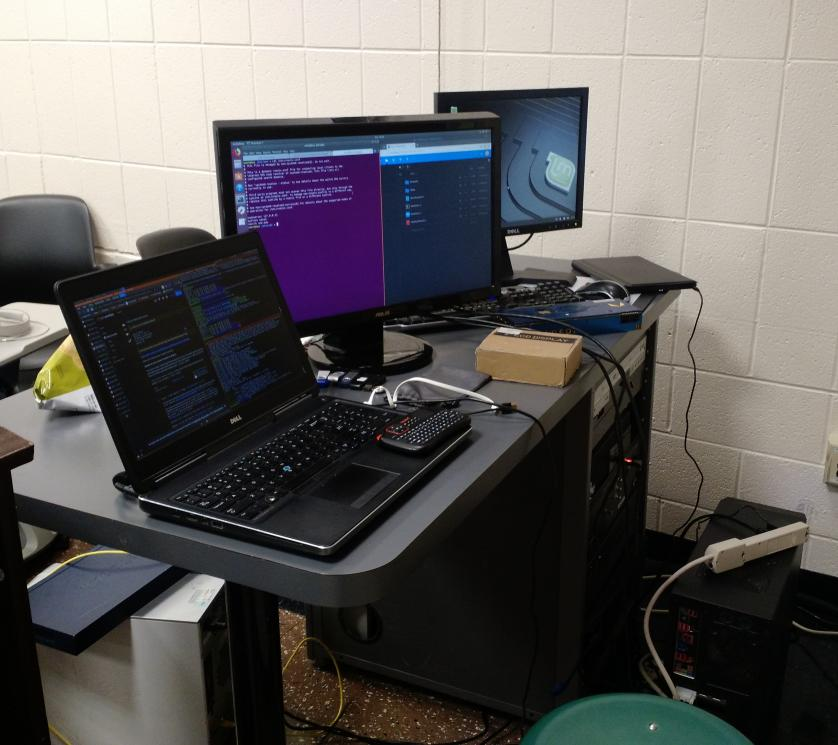

We are a group of students that are passionate about Linux for various reasons, including usefulness for developers, software freedom and open source, customizability, utility in server setup, understanding computers better, etc. We all come together with our different interests and learn from each other for the benefit of the whole group.
Check this page for our meeting info
We maintain a wiki with articles on how to use Linux. The topics range from turning caps lock into control to more advanced topics such as accessing a server with no public IP address.
Kernel Panic was the Linux Club's spring 2019 hackathon (the 2020 hackathon will be called Libre Pizza). The unique part is that we disconnect from the internet halfway through, and rely on local services that we set up. These include a mirror of wikipedia and stackoverflow (with Kiwix and Gozim), a local Nextcloud instance, a local devdocs.io server, and local Linux package mirrors (such as Linux Mint). The first one was in April 2019; here's a photo of the setup:
